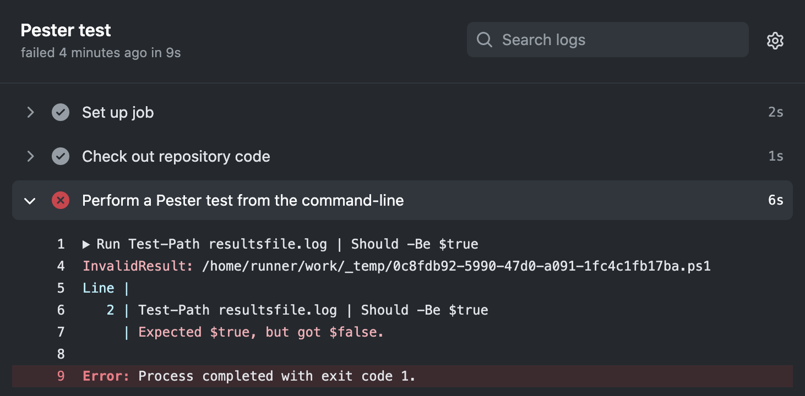

Learn how to create a continuous integration (CI) workflow to build and test your PowerShell project.
This guide shows you how to use PowerShell for CI. It describes how to use Pester, install dependencies, test your module, and publish to the PowerShell Gallery.
GitHub-hosted runners have a tools cache with pre-installed software, which includes PowerShell and Pester.
For a full list of up-to-date software and the pre-installed versions of PowerShell and Pester, see GitHub-hosted runners.
You should be familiar with YAML and the syntax for GitHub Actions. For more information, see Writing workflows.
We recommend that you have a basic understanding of PowerShell and Pester. For more information, see:
To automate your testing with PowerShell and Pester, you can add a workflow that runs every time a change is pushed to your repository. In the following example, Test-Path is used to check that a file called resultsfile.log is present.
This example workflow file must be added to your repository's .github/workflows/ directory:
name: Test PowerShell on Ubuntu
on: push
jobs:
pester-test:
name: Pester test
runs-on: ubuntu-latest
steps:
- name: Check out repository code
uses: actions/checkout@v6
- name: Perform a Pester test from the command-line
shell: pwsh
run: Test-Path resultsfile.log | Should -Be $true
- name: Perform a Pester test from the Tests.ps1 file
shell: pwsh
run: |
Invoke-Pester Unit.Tests.ps1 -Passthru
shell: pwsh - Configures the job to use PowerShell when running the run commands.
run: Test-Path resultsfile.log - Check whether a file called resultsfile.log is present in the repository's root directory.
Should -Be $true - Uses Pester to define an expected result. If the result is unexpected, then GitHub Actions flags this as a failed test. For example:

Invoke-Pester Unit.Tests.ps1 -Passthru - Uses Pester to execute tests defined in a file called Unit.Tests.ps1. For example, to perform the same test described above, the Unit.Tests.ps1 will contain the following:
Describe "Check results file is present" {
It "Check results file is present" {
Test-Path resultsfile.log | Should -Be $true
}
}
The table below describes the locations for various PowerShell modules in each GitHub-hosted runner.
| Ubuntu | macOS | Windows | |
|---|---|---|---|
| PowerShell system modules | /opt/microsoft/powershell/7/Modules/* |
/usr/local/microsoft/powershell/7/Modules/* |
C:\program files\powershell\7\Modules\* |
| PowerShell add-on modules | /usr/local/share/powershell/Modules/* |
/usr/local/share/powershell/Modules/* |
C:\Modules\* |
| User-installed modules | /home/runner/.local/share/powershell/Modules/* |
/Users/runner/.local/share/powershell/Modules/* |
C:\Users\runneradmin\Documents\PowerShell\Modules\* |
Note
On Ubuntu runners, Azure PowerShell modules are stored in /usr/share/ instead of the default location of PowerShell add-on modules (i.e. /usr/local/share/powershell/Modules/).
GitHub-hosted runners have PowerShell 7 and Pester installed. You can use Install-Module to install additional dependencies from the PowerShell Gallery before building and testing your code.
Note
The pre-installed packages (such as Pester) used by GitHub-hosted runners are regularly updated, and can introduce significant changes. As a result, it is recommended that you always specify the required package versions by using Install-Module with -MaximumVersion.
You can also cache dependencies to speed up your workflow. For more information, see Dependency caching reference.
For example, the following job installs the SqlServer and PSScriptAnalyzer modules:
jobs:
install-dependencies:
name: Install dependencies
runs-on: ubuntu-latest
steps:
- uses: actions/checkout@v6
- name: Install from PSGallery
shell: pwsh
run: |
Set-PSRepository PSGallery -InstallationPolicy Trusted
Install-Module SqlServer, PSScriptAnalyzer
Note
By default, no repositories are trusted by PowerShell. When installing modules from the PowerShell Gallery, you must explicitly set the installation policy for PSGallery to Trusted.
You can cache PowerShell dependencies using a unique key, which allows you to restore the dependencies for future workflows with the cache action. For more information, see Dependency caching reference.
PowerShell caches its dependencies in different locations, depending on the runner's operating system. For example, the path location used in the following Ubuntu example will be different for a Windows operating system.
steps:
- uses: actions/checkout@v6
- name: Setup PowerShell module cache
id: cacher
uses: actions/cache@v4
with:
path: "~/.local/share/powershell/Modules"
key: ${{ runner.os }}-SqlServer-PSScriptAnalyzer
- name: Install required PowerShell modules
if: steps.cacher.outputs.cache-hit != 'true'
shell: pwsh
run: |
Set-PSRepository PSGallery -InstallationPolicy Trusted
Install-Module SqlServer, PSScriptAnalyzer -ErrorAction Stop
You can use the same commands that you use locally to build and test your code.
The following example installs PSScriptAnalyzer and uses it to lint all ps1 files in the repository. For more information, see PSScriptAnalyzer on GitHub.
lint-with-PSScriptAnalyzer:
name: Install and run PSScriptAnalyzer
runs-on: ubuntu-latest
steps:
- uses: actions/checkout@v6
- name: Install PSScriptAnalyzer module
shell: pwsh
run: |
Set-PSRepository PSGallery -InstallationPolicy Trusted
Install-Module PSScriptAnalyzer -ErrorAction Stop
- name: Lint with PSScriptAnalyzer
shell: pwsh
run: |
Invoke-ScriptAnalyzer -Path *.ps1 -Recurse -Outvariable issues
$errors = $issues.Where({$_.Severity -eq 'Error'})
$warnings = $issues.Where({$_.Severity -eq 'Warning'})
if ($errors) {
Write-Error "There were $($errors.Count) errors and $($warnings.Count) warnings total." -ErrorAction Stop
} else {
Write-Output "There were $($errors.Count) errors and $($warnings.Count) warnings total."
}
You can upload artifacts to view after a workflow completes. For example, you may need to save log files, core dumps, test results, or screenshots. For more information, see Store and share data with workflow artifacts.
The following example demonstrates how you can use the upload-artifact action to archive the test results received from Invoke-Pester. For more information, see the upload-artifact action.
name: Upload artifact from Ubuntu
on: [push]
jobs:
upload-pester-results:
name: Run Pester and upload results
runs-on: ubuntu-latest
steps:
- uses: actions/checkout@v6
- name: Test with Pester
shell: pwsh
run: Invoke-Pester Unit.Tests.ps1 -Passthru | Export-CliXml -Path Unit.Tests.xml
- name: Upload test results
uses: actions/upload-artifact@v4
with:
name: ubuntu-Unit-Tests
path: Unit.Tests.xml
if: ${{ always() }}
The always() function configures the job to continue processing even if there are test failures. For more information, see Contexts reference.
You can configure your workflow to publish your PowerShell module to the PowerShell Gallery when your CI tests pass. You can use secrets to store any tokens or credentials needed to publish your package. For more information, see Using secrets in GitHub Actions.
The following example creates a package and uses Publish-Module to publish it to the PowerShell Gallery:
name: Publish PowerShell Module
on:
release:
types: [created]
jobs:
publish-to-gallery:
runs-on: ubuntu-latest
steps:
- uses: actions/checkout@v6
- name: Build and publish
env:
NUGET_KEY: ${{ secrets.NUGET_KEY }}
shell: pwsh
run: |
./build.ps1 -Path /tmp/samplemodule
Publish-Module -Path /tmp/samplemodule -NuGetApiKey $env:NUGET_KEY -Verbose